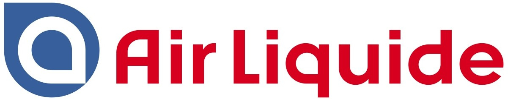
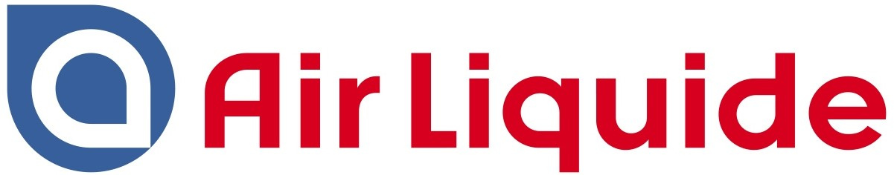

ELCORE е фирма обединила усилията, уменията и професионализма
на екип
от хора с дългогодишен опит в областта на проектирането и реализирането на различни видове проекти. В настоящия
момент целият този професионализъм е съсредоточен в проектирането и изграждането на инвестиционни проекти за
нуждите на своите настоящи и бъдещи клиенти.
Фирмата разполага със собствен офис, складова база и механизация. Складовата база на
фирмата разполага с голяма наличност от оборудване, което допълнително гарантира бързо, качествено и коректно
изпълнение на поетите ангажименти. Наличната механизация дава възможност за гъвкав, надежден и индивидуален
подход към конкретните задачи, с което се ускорява тяхното изпълнение.
Ние изграждаме своите обекти, в съответствие със световните стандарти, залагайки на
опита на доказани специалисти, и използвайки материали и апаратура на утвърдени в световната практика
производители /Schneider
Electric, ABB, Longi Solar, Jinko Solar, Huawei, SolaxPower, и др./.
 


Инж. Венелин Симеонов е магистър – електроинженер, специалност „Електроенергетика и електрообзавеждане, ОКС „Бакалавър“ и ОКС „Магистър“.
Инж. Моника Тонкова-Генчева е магистър – електроинженер, специалност „Електроснабдяване и електрообзавеждане, ОКС „Бакалавър“ и ОКС „Магистър“.


Д-р инж. Иван Димчев е роден на 10 март 1987 г. в гр. София. Завършва Технически университет-София със специалност „Топлотехника“, ОКС „Бакалавър“ и „Магистър“.
Инж. Георги Илиев е завършил Университета по архитектура, строителство и геодезия - гр. София със специалност „Строителство на сгради и съоръжения“, ССС „Бакалавър“ и „Магистър“.


Инж. Петър Дървов завършва „Университет по Архитектура, Строителство и Геодезия, Хидротехнически факултет - гр. София“ със специалност „Водоснабдяване и канализация“, специализация „Пречистване на води“, ОКС „Магистър“.
Инж. Елена Богданова завършва „Университет по Архитектура, Строителство и Геодезия, Хидротехнически факултет - гр. София“ със специалност „Водоснабдяване и канализация“, специализация „ВК мрежи и съоръжения“, ОКС „Магистър“.


Инж. Димитър Станчев е магистър – електроинженер завършил в ТУ – Габрово със специалности „Електроника“ и „Електроенергетика и електрообзавеждане“.